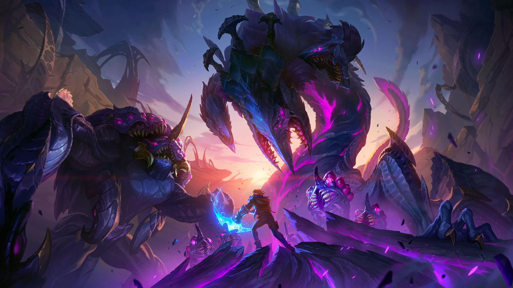

Informacion necesaria para poder disfrutar del juego (JAJA si es que puedes)
Compartimos contigo las claves y consejos esenciales que necesitas saber si eres un jugador principiante de League of Legends. ¡Aprende los conceptos básicos del juego y no dejes que te derroten!

No hay nada de malo en admitir que eres un jugador principiante en League of Legends. Cada día el MOBA de Riot Games recibe a miles de usuarios nuevos que se descargan gratis el juego y se adentran por primera vez en este tipo de experiencia, en un título de estas características.Es normal estar algo perdido en tus primeras horas de juego; no saber de qué tratan las partidas, cuáles son los modos de juego, qué conceptos básicos tienes que tener en mente para poder conseguir victorias... Son muchos detalles, pero no te preocupes porque en esta entrada recopilamos los mejores consejos que necesitas para aprender a jugar a League of Legends si eres un novato. ¡Vamos allá!
- 1. Fundamentos básicos de League of Legends - ¿Qué es un MOBA y cómo se juega?
- 2. Aprende de los tutoriales básicos
- 3. Calles del mapa y qué posiciones jugar
- 4. Los campeones, sus clases y cuál es
- 5. Mejorar a los personajes, conseguir EXP y oro
- 6. Desbloquear habilidades, hechizos y objetos
- 7. Los modos de juego y sus diferencias
Fundamentos básicos de League of Legends - ¿Qué es un MOBA y cómo se juega?
League of Legends es un juego MOBA, o lo que es lo mismo, un Multiplayer Online Battle Arena. Este género podría resumirse en que estamos ante un juego de estrategia en el que dos equipos formados por 5 jugadores cada uno se enfrentan en una arena para ver quien es capaz de destruir antes la base del otro.
En cada partida de League of Legends esencialmente encontrarás las siguientes características básicas:
El nexo: es la base de los equipos. Cada equipo tiene un nexo y para ganar hay que destruir el
del equipo contrario. Del nexo además se generan los súbditos (o minioms) y detrás de este está
la fuente, donde se recupera vida y maná rápido (a parte del acceso a la tienda).
Torretas: son estructuras dispersas por el mapa que infligen daño a los súbditos y campeones
enemigos. Además ofrecen un campo de visión limitado. Hay que destruir las enemigas para poder
avanzar.
Inhibidores: están protegidos por una torreta y destruirlos hará que aparezcan supersúbditos de tu equipo en esa calle durante varios minutos. Después de un tiempo el inhibidor vuelve a aparecer. Sabiendo tan solo esto, ya puedes hacerte una idea de cómo se desarrolla una partida de League of Legends y cuáles son sus objetivos (aproximadamente una partida tiene una duración de entre 20 y 40 minutos). Más abajo te hablaremos de asuntos importantes como las calles del mapa o las posiciones que se juegan.
Ultima Linea